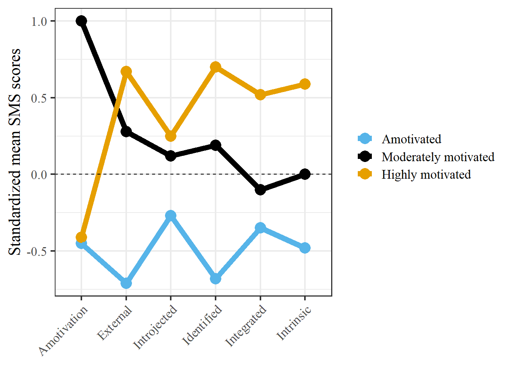

Last compiled on januari, 2021
This lab journal is created for the motivation paper. It contains R code.
All scripts can be found on Github
Social network partners may have an influence on your sport behavior through a variety of mechanisms. However, it seems reasonable that the impact of the network varies over individuals with different types of motivation to participate in sports. After all, sport behavior is the result of the interactions of the individual within the larger social system within which that individual is embedded (social networks). I have devoted some extra attention to the measurement of motivation, as this remains a stumbling block in previous research (mainly due to the multidimensionality of the construct). A person-centered approach towards measuring motivation has gained a lot of popularity.
In the following, I will go through and apply Latent Profile Analysis. Latent Profile Analysis (LPA) tries to identify clusters of individuals (i.e., latent profiles) based on responses to a series of continuous variables (i.e., indicators). LPA assumes that there are unobserved latent profiles that generate patterns of responses on indicator items.
I will go through an example of LPA to identify groups of athletes based on their motivations to take part in running. The data comes from the ABS panel study.
Terminology note: terms like clusters, profiles, classes, and groups are used interchangeably, but are slightly different. In this example we’ll stick to profiles to refer to a grouping of cases, following LPA terminology.
LPA is a Finite Mixture Model (FMM) (see here). FMM is different from other clustering algorithms in that it offers a “model-based clustering”, deriving profiles top-down using a probablistic model that describes the distribution of the data (compared to a bottom-up approach in which clusters are derived using an arbitrary chosen distance measure).

Here are some articles useful for learning about and applying LPA: